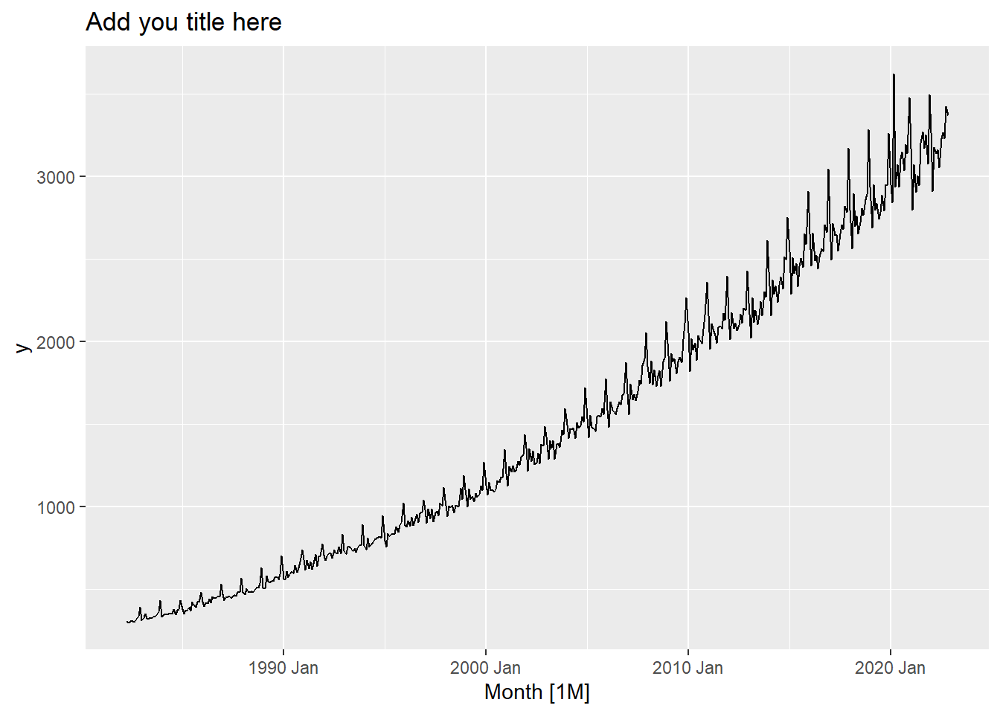
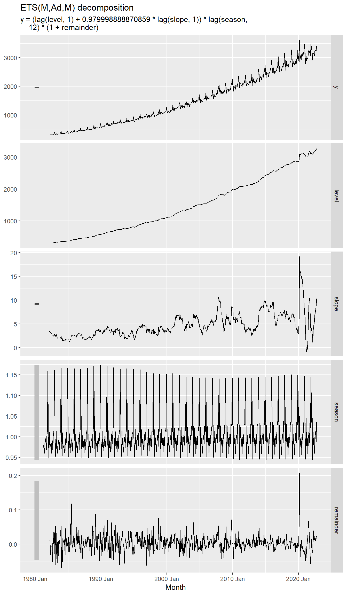
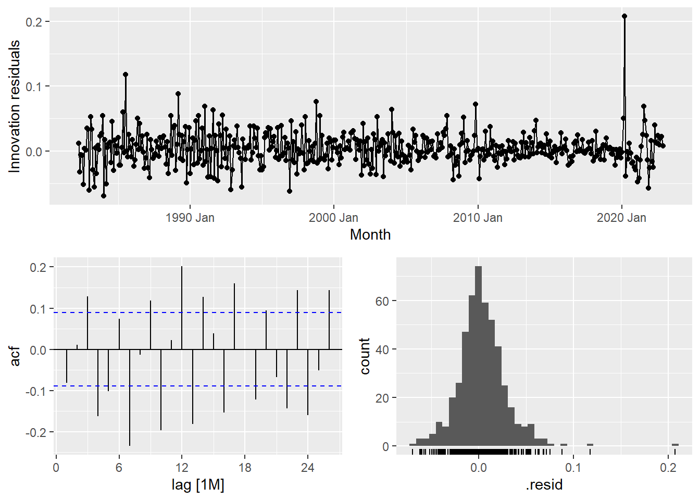
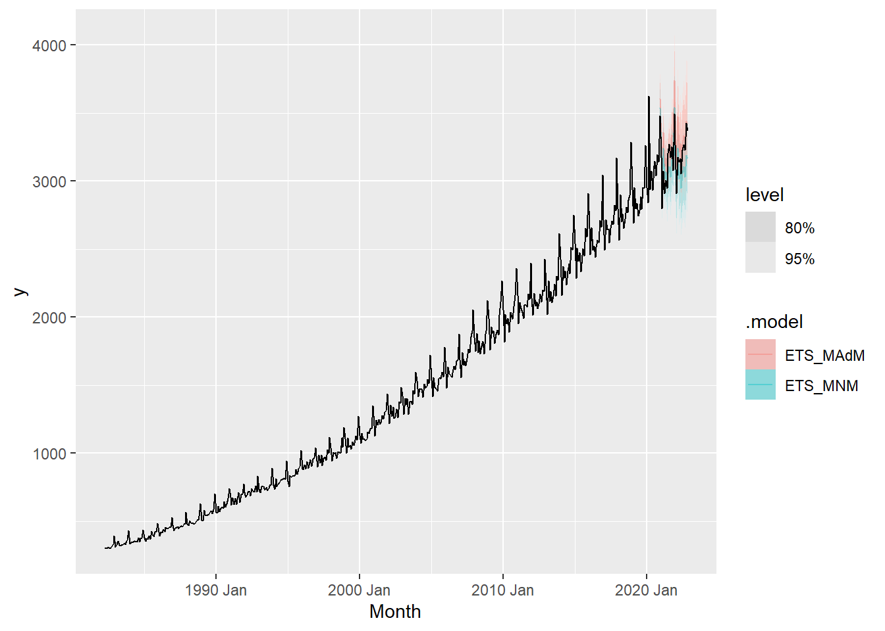
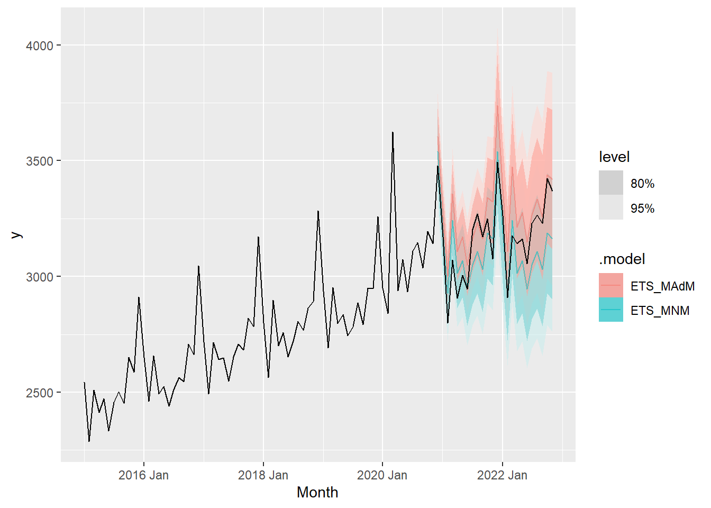
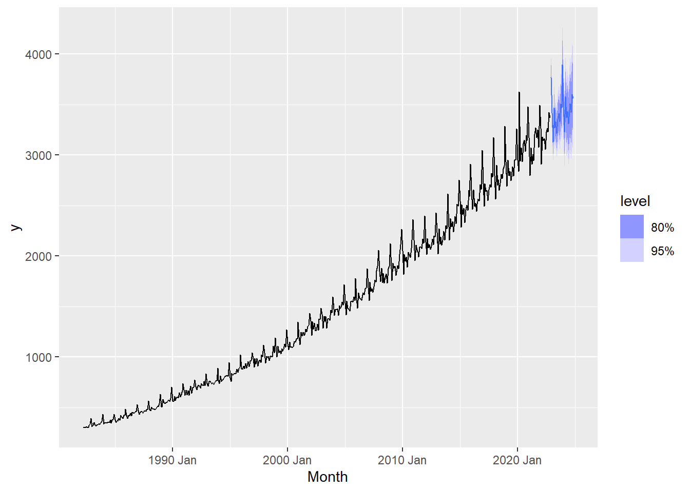
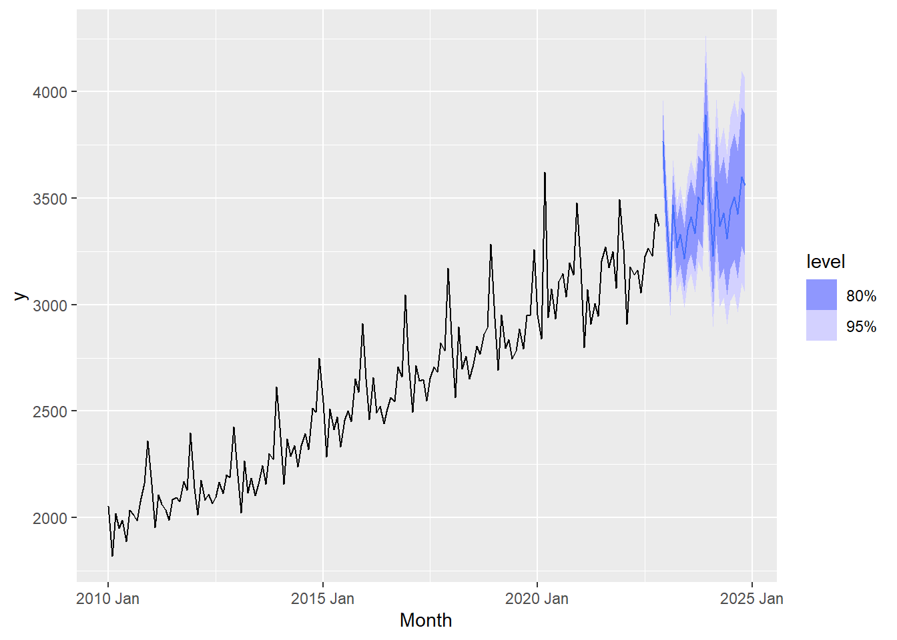

myts %>% autoplot(y) +
labs(title ="Add you title here",
lab="add y label")
Read and tidy up the data using previous code.
For the tasks that follow you will be modelling the original data without any transformation performed (even if you previously deemed it necessary).
Plot your time series. By observing the plot and describing its components select an ETS model you think is appropriate for forecasting. Make sure you justify your choice (no more than 150 words). (8 marks)
myts %>% autoplot(y) +
labs(title ="Add you title here",
lab="add y label")
Marking guide:
Expectation:
Sample answer:
If your model was ETS(M,Ad,M) then you would justify your choices as follows:
Common mistakes:
Estimate the ETS model you described in Question 1 and show the estimated model output. Describe and comment on the estimated parameters and components. Include any plots you see necessary (no more than 150 words). (14 marks)
ETS_MAdM <- myts %>% model(ETS(y ~ error("M")+trend("Ad")+season("M")))
options(digits=4)
ETS_MAdM %>% report()Series: y
Model: ETS(M,Ad,M)
Smoothing parameters:
alpha = 0.3068
beta = 0.02203
gamma = 0.08784
phi = 0.98
Initial states:
l[0] b[0] s[0] s[-1] s[-2] s[-3] s[-4] s[-5] s[-6] s[-7] s[-8] s[-9]
304.4 3.407 1.012 0.9482 0.9997 1.158 1.011 1.002 0.9681 0.9959 0.9851 0.9602
s[-10] s[-11]
0.9857 0.9737
sigma^2: 7e-04
AIC AICc BIC
6416 6418 6492 #or
ETS_MAdM %>% tidy() %>% select(-.model)# A tibble: 18 × 2
term estimate
<chr> <dbl>
1 alpha 0.307
2 beta 0.0220
3 gamma 0.0878
4 phi 0.980
5 l[0] 304.
6 b[0] 3.41
7 s[0] 1.01
8 s[-1] 0.948
9 s[-2] 1.00
10 s[-3] 1.16
11 s[-4] 1.01
12 s[-5] 1.00
13 s[-6] 0.968
14 s[-7] 0.996
15 s[-8] 0.985
16 s[-9] 0.960
17 s[-10] 0.986
18 s[-11] 0.974 ETS_MAdM %>% components() %>% autoplot()Warning: Removed 12 rows containing missing values or values outside the scale range
(`geom_line()`).
Marking guide:
Expectation:
Plot the residuals from the model and comment on these (no more than 50 words). Perform some diagnostic checks and comment on whether you are satisfied with the fit of the model. (Make sure you state all relevant information for any hypothesis test you perform such as the null hypothesis, the degrees of freedom, the decision, etc.). (10 marks)
ETS_MAdM %>% gg_tsresiduals()
augment(ETS_MAdM) %>% features(.innov, ljung_box, lag=24, dof=17)# A tibble: 1 × 3
.model lb_stat lb_pvalue
<chr> <dbl> <dbl>
1 "ETS(y ~ error(\"M\") + trend(\"Ad\") + season(\"M\"))" 206. 0Marking guide:
Expectation:
Common errors:
Ho: The residuals are white noise or more formally \(\rho_1=\dots=\rho_k=0\).
Often the decision rule was not stated clearly (without a comparison of p-value with the level of significance). Null hypothesis statements were missing or there were mistakes in the conclusion after the hypothesis testing.
Many students did not set the correct values for lag and dof arguments in the Ljung-Box test.
dof is lag chosen minus the number of “free” estimated parameters. (Remember for seasonal initial values one parameter is not free). Note that dof=17 for the model selected above. You must set the correct dof for the ETS model you selected in question 1.
Let R select an ETS model. What model has been chosen and how has this model been chosen? (No more than 100 words). (6 marks)
ETS_auto <- myts %>% model(ETS(y))
ETS_auto %>% report()Series: y
Model: ETS(M,A,M)
Smoothing parameters:
alpha = 0.2576
beta = 0.005774
gamma = 0.1111
Initial states:
l[0] b[0] s[0] s[-1] s[-2] s[-3] s[-4] s[-5] s[-6] s[-7] s[-8] s[-9]
305.2 2.336 1.009 0.9491 0.9903 1.166 1.016 1.005 0.9674 0.9947 0.9893 0.9568
s[-10] s[-11]
0.982 0.9737
sigma^2: 7e-04
AIC AICc BIC
6390 6391 6461 Marking guide:
Expectation:
State the model.
How has this model been chosen? The ets function returns the model with the smallest AICc.
Without restrictions, the ETS() function fits all possible combinations and returns the model with the smallest AICc. However, the ETS function is restricted by default and excludes unstable models.
Comment on how the model chosen by R is different to the model you have specified (no more than 50 words). Which of the two models would you choose and why? (no more than 50 words). (Hint: think about model selection here but also check your residuals).
If the models are identical specify a plausible alternative. Give a brief justification for your choice (no more than 100 words). (Hint: also check the residuals from this model). (12 marks)
Marking guide:
Detail breakdown:
0-1.5 -> no explanantion
2 -> Unaccecptable explanation
3 -> Inadequate explanation
4 -> Interesting explanation
+2 -> with the comment upon coefficients
Expectation if the models are different:
Expectation if the models are identical:
Given the severe flattening of the trend in the last few years a plausible alternative is:
ETS_alt <- myts %>% model(ETS(y ~ error("M")+trend("N")+season("M")))
ETS_alt %>% report()Series: y
Model: ETS(M,N,M)
Smoothing parameters:
alpha = 0.3292
gamma = 0.1693
Initial states:
l[0] s[0] s[-1] s[-2] s[-3] s[-4] s[-5] s[-6] s[-7] s[-8] s[-9]
363.6 0.9747 0.9783 0.9949 1.18 1.017 0.9808 0.948 0.9919 0.9919 0.9446
s[-10] s[-11]
1.021 0.9765
sigma^2: 0.001
AIC AICc BIC
6594 6595 6657 Which of the two models would you choose?
Generate forecasts for the last two years of your sample using both alternative ETS models (you will need to re-estimate both models over the appropriate training sample). Plot the forecasts and forecast intervals. Briefly comment on these. Which model does best? (No more than 100 words). (8 marks)
myts_train <- myts %>%
slice(1:(n() - 24))
ETS_train_fit <- myts_train %>%
model(ETS_MAdM=ETS(y~error("M")+trend("Ad")+season("M")),
ETS_MNM=ETS(y~error("M")+trend("N")+season("M")) )
ETS_train_fit %>% tidy() %>%
pivot_wider(names_from=.model,values_from=estimate)# A tibble: 18 × 3
term ETS_MAdM ETS_MNM
<chr> <dbl> <dbl>
1 alpha 0.254 0.380
2 beta 0.0241 NA
3 gamma 0.126 0.0940
4 phi 0.980 NA
5 l[0] 305. 363.
6 b[0] 3.00 NA
7 s[0] 1.01 0.999
8 s[-1] 0.950 0.955
9 s[-2] 1.00 1.00
10 s[-3] 1.16 1.18
11 s[-4] 1.01 1.00
12 s[-5] 1.01 1.01
13 s[-6] 0.965 0.973
14 s[-7] 0.989 1.00
15 s[-8] 0.991 0.987
16 s[-9] 0.953 0.960
17 s[-10] 0.985 0.979
18 s[-11] 0.968 0.955 fc <- ETS_train_fit %>% forecast(h=24)
fc %>% autoplot(myts, alpha=0.4)
fc %>% autoplot(filter(myts, year(Month)>=2015), alpha=0.6)
fc %>% accuracy(myts) %>% select(.type,ME, RMSE, MAPE, MASE)# A tibble: 2 × 5
.type ME RMSE MAPE MASE
<chr> <dbl> <dbl> <dbl> <dbl>
1 Test -115. 149. 3.91 1.64
2 Test 47.5 128. 3.49 1.50Comment on the results.
Marking guide:
Expectation:
Some students did not plot the forecast intervals and did not comment on them. It was clear in the question that you were asked to produce a graph with two sets of forecasts and forecast intervals, and comment on these.
Common errors:
Generate forecasts for the two years following the end of your sample using your chosen model. Plot them and briefly comment on these. (No more than 100 words). (4 marks)
ETS_MAdM %>% forecast() %>% autoplot(myts)
ETS_MAdM %>% forecast() %>% autoplot(filter(myts, year(Month)>=2010))
Marks Breakdown:
Expectation:
Common mistake:
* Most of the explanation on prediction interval are due to the increase in time horizon.
* Should relate the prediction interval with the potential left over pattern in the residual analysis.